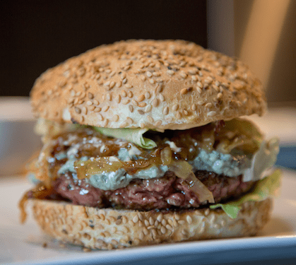

Burger au Bleu

Description
Une tranche de fromage Saint Agur dans un hamburger au boeuf... et ça change tout ! Une recette facile et rapide à préparer, en famille ou entre amis.
Ingrédients
- 4 buns (pains à burger)
- 4 steaks hachés de 150 g
- 1 oignon rouge
- 1 coeur de laitue
- 1 grosse tomate
- 30g beurre doux
- 1 cuillère à soupe en poudre
- 4 cuillères à soupe de soupe de ketchup
- 4 tranches de bacon
- 125g de Saint Agur Tranche
Home